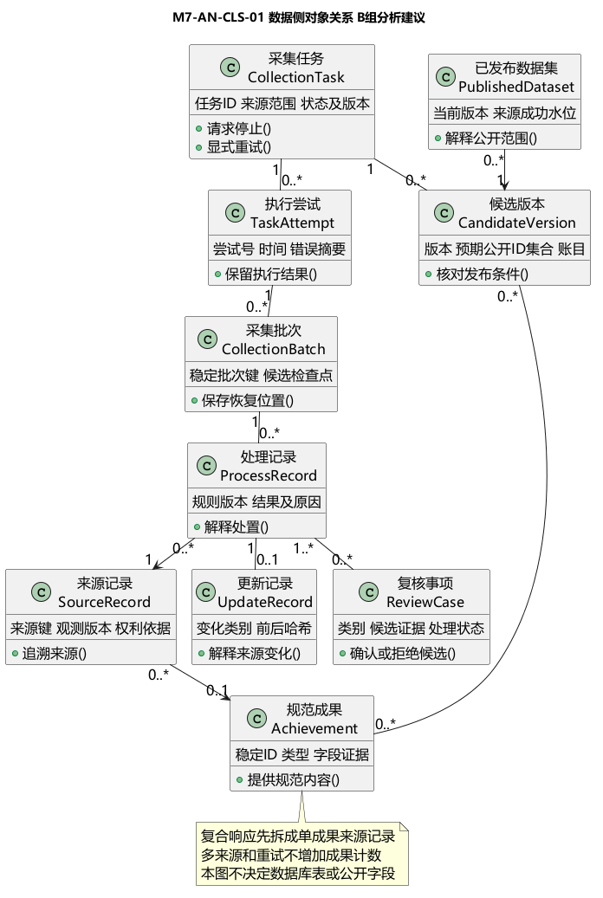
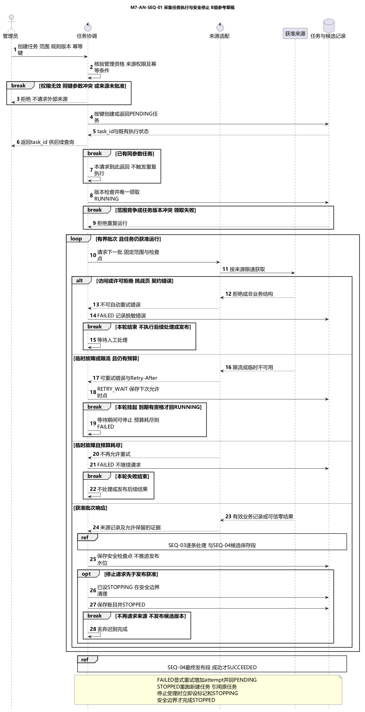
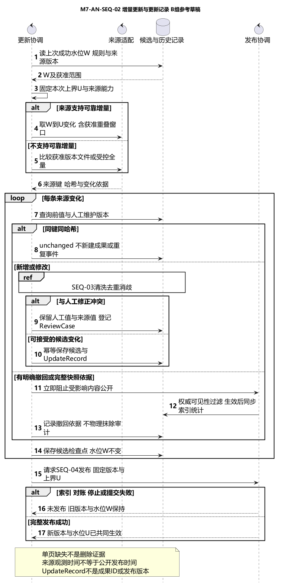
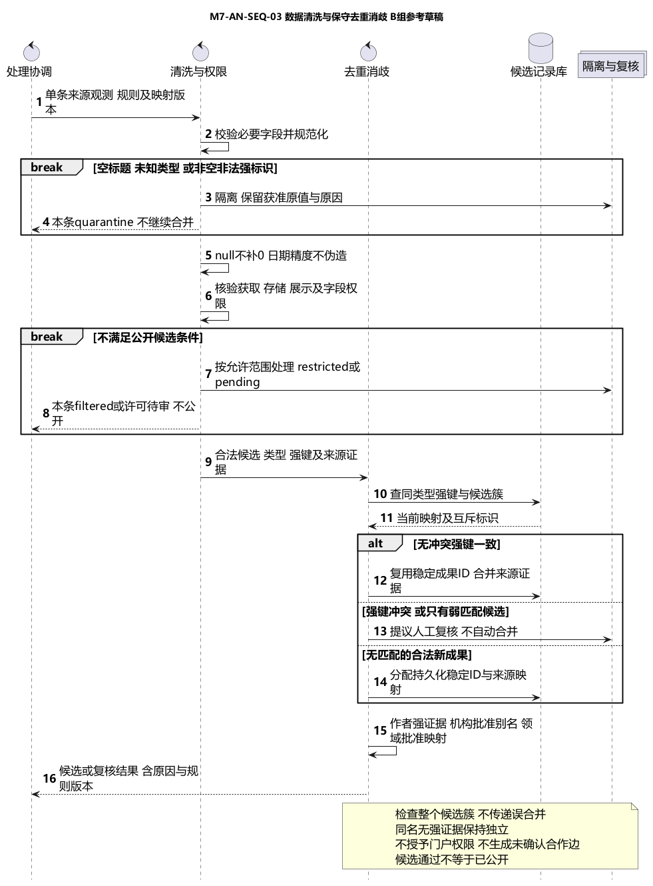
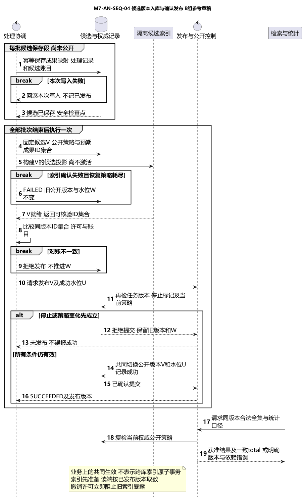

成员7 B组需求分析供稿README.md
成员7 数据采集与处理需求分析
日期：2026-10-27。方案：B组。来源基线：b@90ff356。状态：个人分析供稿，供成员3汇编、成员8复核及成员1/6确认公共规则；不另立第二套正式报告。
本周将已有需求和SPEC展开为业务对象、协作消息、失败恢复和版本发布条件。A组成员2的四图划分仅作为组织方式参考，业务规则取自B组成员7/6/8/9及统一SRS。没有复制A组的任务恢复、非法DOI或事务外发日志方案。
先看什么
文件版：Word章节供稿、整包阅读入口、Word版式检查。Word保留正文，完整参考图单独提供，避免缩印后无法照画。
1. CodeArts绘图清单：本周应手动画的四张顺序图、生命线顺序、消息、组合片段和导出要求。
2. 数据对象和关系：任务、批次、来源、更新、规范成果与发布版本的分析职责。
3. 四条数据交互：前置条件、正常路径、异常路径和图的衔接。
4. 交接与方案比较：B组规则、前端问题答复、未决项及汇编位置。
5. 分析走查清单、追踪表、检查记录。
6. 展示供稿与问答：交成员5/10汇编，不是全组最终PPT。
本周图表
四张顺序图共同构成课程要求的数据采集入库交互模型。SEQ-01控制任务，SEQ-02决定增量输入，SEQ-03逐记录处理，SEQ-04分“候选保存”和“最终发布”两段；不是把四条路径机械串成一次重复执行。
完成边界
已编制B组文字、图源、走查、追踪和展示供稿，并归档用户提供的四张CodeArts导出图。diagrams/根目录仍为PlantUML参考图，diagrams/codearts/才是平台导出文件，二者不混称。图4按用户要求原样提交。导出登记记录文件校验和、图1至3的平台定位及图4工程定位待补事项。PNG/SVG是图像导出，不等于可编辑工程源备份。Word为个人章节供稿；本人理解审阅、成员8复核、全组汇编和课堂提交尚待完成。
本包没有生产代码、数据库表设计、公共API、真实一万条/百万条导入或性能测试。检查记录只证明所列静态检查。依据根目录AGENT，本阶段文档整理不新建核心代码AI日志；如课堂另要求AI声明，应如实说明AI辅助文字、图源、平台绘图及检查，用户提供导出文件并负责理解和审阅，不伪造纯人工创作或审签记录。
01-data-object-model.md
数据对象与关系
版本0.1，2026-10-27，B组分析提案。我们把来源事实、处理结果和公开版本分开，避免把“抓到数据”“写入候选区”“用户已能检索”当成同一件事。对象名称只表达职责，不冻结表名、字段类型、部署服务或公共API。
对象职责
| 对象 | 关键语义属性 | 方法职责 |
| CollectionTask 采集任务 | 任务标识、来源、固定范围、状态、版本、规则版本 | 创建任务、请求停止、显式重试、记录终态 |
| TaskAttempt 执行尝试 | 尝试号、开始结束时间、错误摘要 | 保留一次执行结果，不改写旧尝试 |
| CollectionBatch 采集批次 | 批次键、输入版本、处置账目、安全检查点 | 记录有界处理单元，幂等保存恢复位置 |
| SourceRecord 来源记录 | 来源命名空间、来源键、观测版本、原值引用 | 追溯单个成果的来源事实，保留历史观测 |
| ProcessRecord 处理记录 | 规则版本、输入定位、结果、异常原因 | 解释valid、quarantine、filtered处置 |
| UpdateRecord 更新记录 | 来源键、前后哈希、变化类别、任务与版本 | 解释新增、修改、撤回及冲突；不是成果ID |
| ReviewCase 复核事项 | 证据引用、问题类别、候选值、结论或待定 | 承接非法值、身份/强键冲突和人工值冲突 |
| Achievement 规范成果 | 稳定成果ID、类型、字段证据、公开策略 | 合并无冲突来源、提供获准规范内容 |
| CandidateVersion 候选版本 | 版本标识、预期公开ID集合、账目、许可依据版本 | 暂存本次变化并核对待发布内容 |
| PublishedDataset 已发布数据集 | 当前公开版本、来源成功水位、规则/许可版本 | 解释当前检索和统计使用的数据范围 |
TaskAttempt、CollectionBatch、CandidateVersion、PublishedDataset、ReviewCase是对既有B组语义的分析细化建议；不是新增已批准公共实体。SourceRecord和Achievement沿用成员6/8名称，ProcessRecord承接成员6“处理与更新记录”；UpdateRecord是其变化事实的细分，不另造一套成果身份。
关系与多重性

| 关系 | 基数与含义 | 限制 |
| 任务与尝试 | 一任务有0到多次尝试，每次尝试属于一个任务 | 创建后尚未运行可为0；失败后显式重试增加attempt |
| 尝试与批次 | 一次尝试处理0到多批，每批保留原归属 | 重放引用稳定批次键，不把同输入重复计入成果数 |
| 批次与处理记录 | 一批有0到多条处理记录，每条记录指向一个来源观测 | 同一来源可在多批、多尝试被观察，不用组合关系暗示删除来源 |
| 处理与更新记录 | 一条更新记录追溯一个处理记录 | unchanged可聚合计数，不要求每次无变化都新增事件 |
| 处理与复核事项 | 一条处理记录可关联0到多个复核事项；一个复核事项引用1到多条处理记录 | 冲突复核可共同引用两条或多条来源处理证据 |
| 来源与规范成果 | 单成果来源记录当前映射0或1成果；成果可有多个来源 | 隔离/待复核时可以无映射；原始响应含多成果时先拆分再建来源记录 |
| 候选版本与规范成果 | 候选版本包含0到多条规范内容版本 | 同一稳定成果可出现在多个版本中；隔离内容不得进入公开投影 |
| 已发布数据集与候选版本 | 已建立的公开指针指向一个已核验版本 | 初次发布前可无公开数据集；不暗示失败批次自动公开 |
必须保持的约束
1. task、attempt、batch和成果ID是四个不同概念。FAILED经显式重试可回PENDING并增加attempt；STOPPED不直接恢复，重跑创建新任务并引用旧任务，沿用SPEC-M7-INGEST。
2. 候选检查点只用于恢复已分类/已保存的批次；来源成功水位只在完整版本发布后推进。游标、批次检查点和公开水位不能混用。
3. 规范成果采用持久化稳定ID及映射，不能按输入行号、题名或作者姓名重新编号。多来源、多参与者和重复重试不增加规范成果数。
4. 来源记录粒度是一条成果，不是一个HTTP响应。一个获准响应可拆成多条来源记录；同一来源键的多次观测保留版本，不覆盖历史证据。
5. 原值只在许可允许的范围内保留。获取、存储、展示和导出分开判断；有原始引用不等于有权保留完整网页或全文。
6. 低置信度只形成候选。同名不赋予同一身份，作者消歧不授予门户维护权；未确认关联不进入合作关系边。
7. 候选发布前应检查类型、来源、许可、版本和公开ID集合。公开记录数按唯一成果ID计算；真实/模拟与四类分列，课程总规模口径待1/6确认。
8. 已撤下或禁止字段受当前权威可见性约束，即使旧索引或旧数据版本仍存在，也不得继续公开。
分析边界
来源适配、清洗、去重消歧、发布协调、候选记录库和索引投影是交互图的控制或存储职责，不当作学者、成果等业务实体。没有因此选定消息队列、outbox、数据库产品或服务拆分。
输入依据：SRS数据章节、字段映射、成员6对象结构、成员8核心类模型。
02-data-pipeline-interactions.md
数据处理交互分析
2026-10-27，B组。四张图把既有SPEC转换成协作消息。图中的方法名是分析表达，箭头上的条件不是已实现的API或已通过的系统测试。
图一 采集任务执行与安全停止

目标：管理员获得可追溯任务、进度和终态。前置条件是有效管理权限、已批准的来源及范围；输入还包括规则版本和幂等键，主体由服务端会话取得。
正常路径：协调对象核验权限与来源，按幂等请求创建或返回PENDING任务，返回任务标识。执行时以任务版本/执行资格取得唯一运行权，转RUNNING；适配器读取有界批次。处理与候选保存调用图三及图四的保存段，安全检查点在分类/保存完成后记录。来源结束后调用图四发布段；发布成功后才SUCCEEDED。
拒绝、验证码、HTML挑战页或结构契约不符进入FAILED，不自动重试。临时故障或429且有预算进入RETRY_WAIT，按Retry-After等待；本轮执行挂起，不能继续往下画成处理成功。到期且资格仍有效才回RUNNING；等待期间可STOPPED，预算耗尽则FAILED。
RUNNING收到停止先受理请求并进入STOPPING，不再发新请求，在安全边界撤销未提交写入并保存可恢复账目后STOPPED。已获准停止不能被迟到完成覆盖。已发布成功后才到达的停止请求返回既有成功，不改变终态。失败后的人工重试增加attempt；已停止后重新运行创建新任务，不在图中照搬A组resume。
后置条件：成功任务有发布版本；失败或停止任务保留原因和旧公开版本，成功水位不推进。零结果只有在有效响应与处理核验完成后才可作为零新增成功。依据SPEC-M7-INGEST，AC07-17至22。
图二 增量更新与更新记录

目标：在固定输入范围内识别变化，保留更新依据，不因失败或重放丢失变化。读取的是上次成功发布水位W，本次固定上界U以及来源能力和规则版本。无可靠增量能力时，只使用获准版本文件或受控全量比较，不假称精确增量。
按稳定来源键和内容哈希分类new、update、unchanged；变化经过图三重新检查，进入候选版本并形成UpdateRecord。相同输入和规则版本重放不新建重复成果；更新记录本身也需要稳定事件依据，不因失败重试重复累计变化。
人工维护值与来源变化冲突时保留双方依据，生成复核事项，不覆盖人工值；冲突字段继续使用上次已批准值或阻止相关候选公开，具体选择待公共规则确认。仅凭某一页未出现记录不能判断删除。明确撤回或完整快照核对成立时，先让当前公开响应层阻止受影响内容，再安排索引/统计同步，不能等待新版本才停止暴露。
批次检查点可在候选处理中保存，但W不变。只有图四返回发布成功且新版本/新水位已经共同生效，才记录本次发布完成。索引、对账、停止或发布竞争失败均保留W。来源允许迟到数据时使用待评审的重叠窗口；不臆造具体天数。
后置条件：更新记录能追溯任务、来源、哈希和规则版本；公开数据集只指向核验成功版本。依据M7-UPDATE-01、SPEC-M7-INGEST第5节和AC07-22至24。
图三 数据清洗与保守去重消歧

目标：将单条来源观测处理为有证据的候选成果，或明确隔离/复核结果。输入是获准来源记录、原值引用、规则与映射版本；整个输入包结构损坏时先停止该包，本图的逐条处理不能用于掩盖坏编码或不完整解析。
清洗执行NFKC比较键、空白和DOI规范化，保留显示值与原值依据；年、月、日精度不伪造，未知年份/引用数为null而不是当前年/0。非空非法强标识、空标题、未知类型进入隔离，不将非法DOI清空后悄悄继续匹配。
字段权限独立判断。无合法存储依据的载荷不继续保存；许可待审、受限或禁止展示的内容不进入公开候选。合法的非公开处理只在被允许的范围内留存，不把全条元数据视为统一CC0。
同类型无冲突强键可关联同一规范成果，保留各来源及稳定ID；强标识互斥、标题核心冲突或传递候选簇存在矛盾时进入复核。弱匹配仅提出候选，不设置一个新阈值自动合并；无匹配且合法的新成果可分配稳定ID。作者强证据/批准映射才关联，姓名不是主键；机构用强ID或批准别名，领域用批准映射，未知保留。
后置条件：返回valid、quarantine、filtered或review结果及原因、来源和规则版本；valid仅表示候选处理通过，不等于已公开。依据SPEC-M7-CLEAN、SPEC-M7-RESOLVE及AC07-01至16。
图四 候选版本入库与确认发布

目标：隔离“保存候选”和“公开新版本”，让检索、统计及成功水位有一致依据。第一段按稳定ID/来源键幂等保存规范内容、映射、处理/更新记录与候选账目；失败的本次写入回滚，不能把部分写入当作已发布。
第二段只在全部批次已处理、任务仍获准运行时执行。构建隔离的候选索引，核对同一版本的预期公开成果ID集合、字段许可与计数。不能仅比较数据库和索引条数相等。索引确认失败时可以在RUNNING的等待发布阶段有限重试，超出策略则FAILED；不推进公开水位，不重新采集已保存的候选输入。
就绪后再次核对任务版本、停止请求及当前许可/公开策略。发布控制以原子比较或等价业务保证共同切换公开版本、来源成功水位并记录成功；不是声称数据库与索引有分布式原子事务。索引先准备但不对外激活，读端按已发布版本取数。停止或策略变更抢先成立时拒绝提交，不能先把新版本公开再决定停止是否有效。
公开查询仍按当前权威策略核验完整合法集合，统计分母/total与结果一致；旧索引不能泄漏已撤下信息。版本不再安全或不可复现时明确反馈版本变化/依赖失败，不返回伪造空集。许可撤销过滤不能仅过滤当前页而保留未过滤total。
后置条件：成功时新版本V与新水位U共同可核验；失败、停止、对账不符时旧公开版本与W保持不变。依据SPEC-M7-INGEST第5至6节、AC07-22至24及成员8公开范围/版本约束。
四图衔接
SEQ-01是生命周期入口；增量模式使用SEQ-02选择输入，逐记录调用SEQ-03，处理批次调用SEQ-04保存段，全部输入结束后只调用一次SEQ-04发布段。调用方向不应画成四个图各自再次创建任务或再次从公网抓取同一批。
四张顺序图中的数据库、索引、控制和适配器只表达分析职责。实现可以使用事务、条件写、租约或其他机制，但必须保持图中的可观察约束；本包不把A组outbox方案直接设为B组架构。
03-analysis-handoff.md
分析交接与待确认事项
日期2026-10-27。交付范围是B组成员7章节，不覆盖成员2、6、8、9原稿，也不自行冻结公共SRS、API、实体或验收标准。
汇编位置
成员3接入唯一需求分析报告的数据章节；成员8复核数据和业务读取的衔接；成员5/10取图、追踪及展示供稿。图号M7-AN-SEQ-01至04和M7-AN-CLS-01是局部编号，正式编号由汇编者映射，不直接覆盖A组图号。
| 章节 | 可接入内容 | 文件 |
| 业务对象识别和数据侧类模型 | 对象属性、方法、关系与基数 | 01-data-object-model.md |
| 数据采集入库交互模型 | 四条正常/异常流程和发布约束 | 02-data-pipeline-interactions.md及四张图 |
| 需求到模型追踪 | 既有M7编号、SPEC和AC映射 | traceability.csv |
| 交付和展示 | CodeArts导出登记、异常走查、两页内容和问答 | 04、05及slides目录 |
B组输入与A组参考的区别
| 议题 | 本包采用的B组输入 | A组只作为对照 |
| 任务和尝试 | PENDING等既有状态；FAILED人工重试增加attempt；STOPPED重跑新任务 | 不照搬DRAFT/QUEUED或停止resume |
| 来源进度 | 候选检查点用于恢复；发布成功才推进成功水位 | 不把批次检查点直接当发布水位 |
| 非法强键 | 隔离，不清空后继续弱匹配 | 不直接使用warning放行 |
| 低置信度 | 弱证据仅生成复核候选 | 不照搬双阈值自动合并 |
| 入库与检索 | 候选保存、索引准备、同版本ID集合核对、发布确认 | 不将事务outbox作为已选架构 |
| 输出对象 | Achievement、Participation、Institution、SourceRecord沿用B组语义 | 可映射A组别名，但不是复制后换署名 |
共同需求自然可以产生相似结构，不为“独立开发”虚构算法差异。成员2四图划分用作格式参考；本包没有将A组文件合入B组或宣称两图已经共同批准。
给前端与业务岗位的答复
| 问题 | 本包分析答复 | 尚未获得的证据或决定 |
| IA9-Q02 FS9-Q02 EX9-Q02 数据过时 | 显示最后成功发布时点和来源观测时点；数据年龄不等于快照失效。来源失败要显示更新失败而非伪装最新 | 更新周期依来源能力和许可配置；30天仅候选，没有统一实测周期，不给虚构承诺 |
| EX9-Q05 未知领域统计 | 保留unknown/未映射成果数与全部获准成果分母，不能因排除未知使比例看起来更高；多领域可交叉 | 排名/占比的正式分母和展示方式需3/8、4/9、1/6确认 |
| 缺失字段分布 | 明确null未知、0确认零、空关系仅确认无人/无关联；字段状态应可追溯 | 本轮没有采集统计样本，不填百分比或“完整率已达标” |
| 同名区分线索 | 可公开且有依据的机构、领域、代表成果；学者ID保持独立 | 不补编单位和身份；低置信度关系不进入合作网络或门户管理权限 |
| 来源记录与成果关系 | 单条来源观测粒度先归一到单成果；复合响应拆分，历史观测按版本保留 | 与成员8确认当前0..1映射和历史映射表达，不将多个观察压成一条最新记录 |
| 发布和索引失败 | 管理端区分候选已保存、等待索引、未发布；公开查询使用已发布版本及当前权威策略 | 具体机器码/字段名/同步时限由公共接口设计确认，不能由页面猜状态 |
以上是书面分析答复，不表示已向队友发送、对方已接受或公共契约已经批准。
需要团队决定
- 当前B组SRS写不少于一万条，A组新分析提到百万级；本包不擅改数量，不把任一规模当成已经运行达标。请1/6核对最新课堂要求。
- STOPPING是否对外显示、FAILED的task/attempt语义及与A组公共状态的映射仍需共同确认。
- CandidateVersion等对象是分析细化建议；是否建实体、表或字段留后续设计，不能据类图直接生成DDL。
- 候选索引未就绪时可等待多久、自动重试预算、检查点保留与版本保留期都待统一配置，不编秒数或天数。
- 公共数据源实际授权、国内来源和质量样本缺口沿用原调研，不能被本次图文分析“自动解决”。
完成与未完成
本地分析、参考图源、Word和四张CodeArts导出图已整理。平台导出文件与参考图分目录登记，图4保持用户提供版本不作修改；图1至3提供平台定位，图4可编辑工程定位由绘制方补充，未将SVG冒充工程源备份。本次按用户授权提交B组个人供稿PR，不代表已经合并、本人或队友已审签、全组PPT已汇编或课堂平台已提交。仍需本人理解审阅、成员8衔接复核及团队汇编。
04-codearts-drawing-guide.md
成员7 CodeArts绘图清单
本周是需求分析阶段，成员2/7负责采集任务、更新记录、数据清洗和数据入库四条交互。B组沿用自己的规则，并交给统一报告汇编。本页保留绘图方法供复核；diagrams/根目录为参考图，用户提供的四张CodeArts导出图已另存于平台导出目录。
应该选择什么图
新建四张顺序图，也叫时序图。不要选择状态机图、活动图或类图。你此前的“采集任务状态机图”属于需求建模成果，保留，不需要把它换成这四张。
| 顺序 | CodeArts图名 | 照画图片 | 从左到右的生命线 |
| 1 | 采集任务执行与安全停止 B组 | 图一 | 管理员、任务协调、来源适配、获准来源、任务与候选记录 |
| 2 | 增量更新与更新记录 B组 | 图二 | 更新协调、来源适配、候选与历史记录、发布协调 |
| 3 | 数据清洗与保守去重消歧 B组 | 图三 | 处理协调、清洗与权限、去重消歧、候选记录库、隔离与复核 |
| 4 | 候选版本入库与确认发布 B组 | 图四 | 处理协调、候选与权威记录、隔离候选索引、发布与公开控制、检索与统计 |
“数据侧对象关系”类图是给成员3/8核心类图的局部分析输入，不是要求你再画整个系统类图。若汇编负责人需要你提供局部原生类图，再按对象关系图补画。
画图的通用方法
1. 先放生命线并命名，拉开横向间距；管理员可用参与者符号，其余用对象生命线。控制、数据库等图标只是辅助，重点是职责和消息正确，不必为复刻图标重新选图种。
2. 从上往下按编号添加调用消息。实线箭头表示请求，虚线箭头表示返回；同一对象调用自己画自调用。顺序图不用状态机的Initial、Final、Transition节点。
3. 再添加组合片段：alt是互斥分支，用分隔线和[条件]区分；opt是可选路径；loop是循环；break条件成立时结束本次交互，不继续走到成功；ref表示引用另一段交互。
4. 图片中的group只是“保存候选”“最终发布”的分段标题，不是新增业务状态。平台没有同名分组时可用普通注释说明，不能省略真正的分支条件。
5. 消息允许缩写，但以下语义必须保留。图过长时先加大画布、折行文字；不可把FAILED或RETRY_WAIT后面的箭头直接接回本轮成功。截图需保留标题、生命线和分支条件。
参考图中管理员创建请求在前，任务执行随后发生；返回task_id不表示请求一直等待整个采集完成。重试等待属于本轮结束后的下一次获准执行，不在同一轮继续处理来源结果。
图一需要保留的内容
- 创建任务并核验管理资格、来源权限、幂等键。同参数重放返回原任务；同键不同参数拒绝；唯一领取失败不重复运行。
- 运行时按有界批次访问来源。拒绝、挑战页或契约错误直接FAILED；临时错误且有预算进入RETRY_WAIT并遵守Retry-After；预算耗尽FAILED。
- 有效响应才调用图三及图四候选保存段，之后保存安全检查点。停止受理即设置标记和STOPPING，不再发新请求；到安全边界完成清理和STOPPED。
- 停止先于发布时不发布，迟到结果不覆盖。所有批次完成后引用图四最终发布段，发布确认才SUCCEEDED。
- 底部注释：FAILED人工重试增加attempt；STOPPED重跑创建新任务引用旧任务。
不要把“清洗中”“入库中”画成新的任务终态；它们是RUNNING内部阶段。较长的错误解释放注释，不改变箭头方向。
图二需要保留的内容
- 读取上次成功水位W，固定本次上界U和来源版本。alt区分可靠增量与获准文件/受控全量比较。
- loop遍历变化，alt区分同键同哈希、合法新增/修改、明确撤回。新增/修改引用图三，不绕过许可、清洗和去重。
- 人工值冲突登记复核，不覆盖人工修正。隔离或禁止公开的处理结果不得当作可接受候选保存。
- 明确撤回或许可撤销先由权威公开层阻止暴露，再同步索引和统计。单页缺失不是删除证据。
- 候选检查点可保存，但W不变。只有图四完整发布成功，新版本与U才共同生效。
图三需要保留的内容
- 输入是单条来源观测，不是整个网页。必要字段、比较键、DOI、日期及缺失值检查后，非法强标识、空标题或未知类型隔离并结束本条自动合并。
- 获取、存储和展示权限分开检查；不允许公开的内容不进入公开候选，原值也只能在获准范围内保留。
- alt三分支：无冲突强键一致则复用稳定成果ID；强键冲突/弱匹配只复核；无匹配的合法新成果才分配稳定ID。
- 作者强证据、机构批准别名、领域批准映射；同名不等于同一身份，不授予门户维护权，不形成未确认合作边。
- 返回处理结果、原因、来源和规则版本。“候选通过”不等于“已公开”。
图四需要保留的内容
- 第一段按批次幂等保存候选和处理账目。写入失败回滚本次写入，不记已发布；成功只返回安全检查点。
- 第二段在全部批次结束后执行一次。固定候选版本V及预期公开ID集合，构建隔离候选索引。索引失败恢复耗尽、或同版本ID集合/许可/账目不一致，都不得发布。
- 发布前复核任务版本、停止标记和当前策略。alt区分停止/策略变化抢先成立与提交条件仍有效。
- 共同切换已发布版本和成功水位U，确认后SUCCEEDED。不是数据库和索引跨系统原子事务。
- 检索与统计按已发布版本和当前合法全集取数；total、分母和结果一致，旧索引也不能泄露撤下内容。
手绘完成后留下什么
每图保留CodeArts原生可编辑模型或平台支持的工程导出、清晰PNG或SVG，以及可核对的项目/图名和版本记录。只复制PlantUML图片进画布不算原生手绘完成；实际导出格式以你的平台界面和课程要求为准，本说明不假定PNG可反向变成可编辑模型。
本包已按M7-AN-SEQ-01-codearts至04-codearts归档四张实际导出文件，并记录来源文件名、校验和及可用的平台定位。未修改原始导出内容；图4按用户要求保持现状。PNG/SVG不等于平台可编辑工程，工程备份是否需要另交以课程要求为准。复核重点仍是箭头、分支结束、检查点/水位和停止/发布竞争。
你这周的最终核对
- 四张CodeArts顺序图实际完成并导出，而不只是拥有本包参考图片。
- 读懂并审阅对象说明、交互说明、24条走查及两页展示供稿。
- 将个人章节、四图和待确认事项交成员3汇编、成员8复核；公共规则由成员1/6确认。无需为了个人工作再交第二套正式报告。
- 平台绘图含AI辅助操作，四张导出已归档；本人理解审阅、团队接入和课堂提交仍须按实际完成记录，不预填签字。
05-walkthrough.md
分析走查场景
以下是对模型应表达行为的检查清单，不是程序测试结果。静态检查只能确认编号、文件和关键分支存在；真实并发、等待、权限、数据库和检索故障仍待实现后执行。
| 编号 | 场景 | 模型预期 | 对应图与既有验收 |
| W07-01 | 无管理资格或来源许可无效 | 不创建可执行任务，不发送来源请求 | SEQ-01 AC07-16/18 |
| W07-02 | 同幂等键相同参数重放 | 返回既有任务，不重复运行 | SEQ-01 AC07-23 |
| W07-03 | 同键不同参数或同范围执行竞争 | 拒绝冲突/拒绝重复领取 | SEQ-01 AC07-17/23 |
| W07-04 | 401/403/防护拒绝或挑战页 | FAILED，无自动绕过与重试 | SEQ-01 AC07-18 |
| W07-05 | 429仍有预算 | RETRY_WAIT，Retry-After之前不新发请求 | SEQ-01 AC07-19 |
| W07-06 | 等待期间停止或预算耗尽 | 分别STOPPED或FAILED，本轮不继续处理 | SEQ-01 AC07-19/20 |
| W07-07 | 运行中停止先被受理 | STOPPING到安全边界再STOPPED，不发布 | SEQ-01/04 AC07-20 |
| W07-08 | 发布成功后迟到停止 | 保留SUCCEEDED，不回退终态 | SEQ-04 AC07-20 |
| W07-09 | 失败后显式重试与停止后重跑 | 分别新attempt或新任务引用，不覆盖日志 | SEQ-01 AC07-21 |
| W07-10 | 增量同键同哈希 | unchanged，不新增成果或重复事件 | SEQ-02 AC07-23 |
| W07-11 | 来源变化和人工修正冲突 | 保留两方依据，登记复核，不覆盖人工值 | SEQ-02 AC07-11/24 |
| W07-12 | 来源单页缺失 | 不直接当作删除 | SEQ-02 AC07-24 |
| W07-13 | 明确撤回/许可撤销 | 权威公开层先阻止，不能等待新版本 | SEQ-02/04 AC07-16/24 |
| W07-14 | 断点已保存但最终发布失败 | 候选可恢复，成功水位W不变 | SEQ-02/04 AC07-22 |
| W07-15 | 非空非法DOI或未知类型 | 隔离，不清空强键后继续合并 | SEQ-03 AC07-02/05 |
| W07-16 | 年份未知和引用数未知 | null，不补当前年或0 | SEQ-03 AC07-03/04/06 |
| W07-17 | 来源许可待定或字段不许展示 | 不进入公开候选，依存储权限决定保留范围 | SEQ-03 AC07-16 |
| W07-18 | 无冲突同类型强键 | 稳定ID合并来源，不膨胀成果总数 | SEQ-03 AC07-08 |
| W07-19 | 跨类型同ID或簇中强键互斥 | 不自动合并；互斥簇复核 | SEQ-03 AC07-09/11/12 |
| W07-20 | 同名、弱标题匹配或未知机构 | 保持独立/待复核，不猜身份和父机构 | SEQ-03 AC07-10/13/14 |
| W07-21 | 候选写入失败或索引构建失败 | 不激活候选版本，旧公开版本不变 | SEQ-04 AC07-22 |
| W07-22 | 公开ID集合不同但条数相同 | 对账失败，拒绝发布 | SEQ-04 AC07-24 |
| W07-23 | 停止或策略变更先于发布提交 | 拒绝提交，不推进水位 | SEQ-04 AC07-20/22/24 |
| W07-24 | 正常发布与公开读取 | 新版本和水位一致，结果/total/统计同合法范围 | SEQ-04 AC07-17/24 |
AC07-01、03、07的比较键、日期精度、批准领域映射需在图三的规则细化中走查；AC07-15的持久化撤销仍待真实系统验证。以上场景不会产生真实F1、吞吐或一万条/百万条达标结论。W07-02/03的任务幂等语义直接依据INGEST第1及4节，AC07-23仅覆盖来源记录幂等，不能据此宣称任务并发测试已通过。
slides/slide-content.md
成员7 需求分析展示供稿
建议占统一PPT两页，约两分钟；不是全组最终PPT。四张平台导出图已归档，正式展示优先选用diagrams/codearts/中的文件，勿将PlantUML参考图标作CodeArts导出。
第一页 数据侧对象和四条协作
对象重点：任务与尝试分开；来源记录与规范成果分开；更新记录解释变化；候选版本不等于公开版本。
展示四张顺序图目录，主讲采集到入库的主链。强调本周是消息协作，原先七态状态图仍负责生命周期，不把流程步骤全部改成新状态。
讲稿：本周我负责B组数据采集、更新、清洗和入库分析。我沿用已有三份SPEC，把任务、来源、处理记录和规范成果之间的协作画成四张顺序图。来源适配先验证权限与响应结构，处理结果先进入候选版本；正常完成还要通过索引和同版本集合对账。图中的控制对象是职责，不代表已经选择数据库或部署架构。
第二页 失败时不能改变什么
选用SEQ-04发布图，圈出候选保存、索引确认、版本提交三处。
讲稿：B组把恢复检查点和成功水位分开。处理中可以保存检查点，但索引失败、停止或对账不符时，成功水位和旧公开版本都不变。只有任务版本和当前公开策略仍有效，才能共同切换公开版本和水位。清洗方面，非法强键进入隔离，弱证据不自动合并，同名不授予门户权限。这些目前是分析结果，不是生产系统已经运行通过的证明。
问答准备
- 为什么不照搬A组？四张图的主题可相同，但B组的任务恢复、非法DOI、保守匹配和候选发布规则来自已有B组SPEC。
- 为什么索引写好还不能立刻公开？候选可能没有全部完成，也可能许可/停止状态已经变化，需要在发布边界再次核对。
- 为什么不每处理一批就推进水位？批次位置是恢复检查点；成功水位说明已经发布的来源范围，二者不能混用。
- 数据量和质量达标了吗？本次不作运行达标声明。一万/百万门槛待团队确认，真实导入及质量测试在实现阶段完成。
- AI和本人分别做了什么？AI辅助文字、图源、平台绘图及静态检查；用户提供导出文件并负责理解审阅。图4来自另一个绘图任务，当前归档不改图；不将协作绘图称作纯人工创作，不预填复核签字。
validation-report.md
本地静态检查记录
2026-10-27。检查对象是B组成员7分析材料。结果只证明下列检查，不代表生产程序、真实数据、权限并发或CodeArts手绘已经完成。
| 检查 | 实际结果 | 范围 |
| B组输入文件哈希 | 通过 | 核验18个输入；固定基线90ff35622f56cd00ab3ca9844f34b45183be8402 |
| 需求追踪编号 | 通过 | 38行，对应9项功能、5项非功能、24项既有验收；不代表系统通过 |
| 分析走查场景 | 通过 | 24项场景是分析预期，未执行生产测试 |
| Markdown相对链接 | 通过 | 检查51个本地文件链接 |
| 五张参考图导出 | 通过 | 5份PUML、5份SVG、5份PNG；与CodeArts导出分目录保存 |
| 四张CodeArts归档导出 | 通过 | 1份PNG、3份SVG；逐份核对原文件SHA256和尺寸；SVG编号连续。不是工程源或人工审签证明 |
| PlantUML语法 | 通过 | 对5图执行-checkonly，退出码0；渲染工具plantuml-1.2026.8.jar |
| 改动范围 | 通过 | 仅成员7个人目录，不写公共SRS/API/其他成员材料 |
建模语义复核说明
已按B组SPEC核对以下分析语义：同键请求不重复执行；重试等待不穿透到成功；非法强标识隔离；弱证据仅复核；STOPPED重跑创建新任务；候选检查点与成功水位分离；同版本ID集合对账；公开策略即时生效。这是本轮AI辅助检查，不冒充本人或队友签字。图4按用户要求原样归档，未改图。
仍待实际完成
- 四张CodeArts导出已归档；本人理解审阅仍待完成。图4工程定位由绘制方补充，如课程要求工程源备份须另行导出。
- 成员8衔接复核、成员3接入唯一报告、成员5/10汇编展示、成员1/6公共规则确认。
- 真实来源授权和访问验证、质量标注、持久化撤销、真实429等待、并发停止和发布故障注入、规模与性能验收。
- Word版式检查另见实际生成后的QA记录；本脚本不验证Word分页。
复现
用Python运行scripts/validate_analysis.py --plantuml-jar <本机已有的PlantUML jar绝对路径>。需要Java；本包不携带或自动下载jar。每次改参考图后须先用同一工具重新导出PNG/SVG，再检查并人工看图。CodeArts文件仅核验归档完整性，不由本脚本重绘。命令为材料检查，不是项目构建或生产测试。